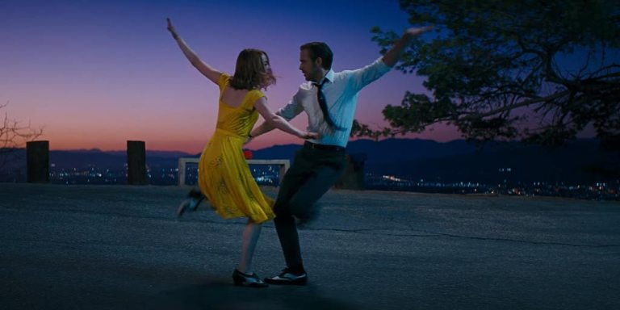

La danza è una disciplina che si esprime nel movimento del corpo secondo una coreografia prestabilita o attraverso l'improvvisazione. Si tratta di una manifestazione artistica presente in tutte le culture umane in varie rappresentazioni, spesso accompagnata da altre arti come il teatro e la musica. Insieme al canto, è l'altra unica disciplina che permette di creare arte con il solo uso del corpo, senza doversi avvalere di oggetti che fungono da strumenti.
Danza e teatro
Nella società occidentale, fin dall'antica grecia la danza è parte integrante dello spettacolo teatrale, ma entra sui palcoscenici solo nella seconda metà del 600 per arrivare poi nei cinema e nella televisione in epoca contemporanea.
